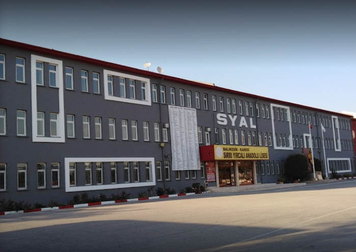

| İLETİŞİM |
|---|
| Adres:
Balıkesir / Türkiye |
| Telefon:
0555 1234567 |
| Eposta:
Balıkesir / Türkiye |
| KİŞİSEL |
| Doğum Tarihi:
01.01.2000 |
| Medeni Durumu:
Bekar |
GİRAY SAYLAN
EĞİTİM
- İlköğretim: Mehmetcik ilköğretim Okulu 2007-2015
- Lise: Sırrı Yırcalı Anadolu Lisesi 2015-2019
- Üniversite: Sakarya Bilgisayar Mühendisliği 2019-...
YABANCI DİL
- İngilizce: İyi
- Almanca: Başlangıç
İLGİ ALANLARI
Futbol oynama konusunda vasat olsamda en büyük ilgi alanım. Avrupanın popüler liglerindeki takımların kadroları hakkında bilgi sahibiyim. Boş zamanlarımda oynadığım bilgisayar oyunları futbolla ilgili.
Bilgi Notu: SYAL
